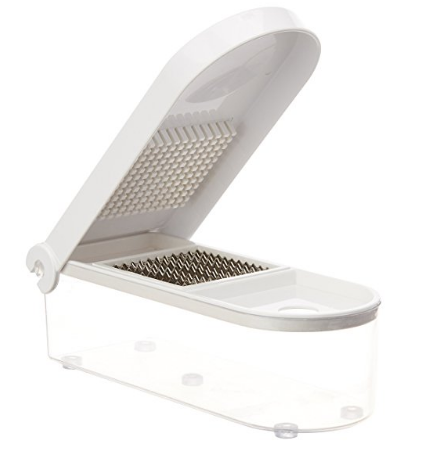

Back
Buyit
Contact Us
Back
Buyit
Contact Us
Home Appliances
Ganesh Vegetable & Fruit Chopper Cutter With Chop Blade & Cleaning Tool

M.R.P.: 610.00
Price: 209.00
Deal Price: 199.00 FREE Delivery on orders over ₹499.00
You Save: 411.00 (67%)
Inclusive of all taxes
Cash on Delivery eligible.
PRODUCT DESCRIPTION
- Fastest/ safest/ easiest
- Ideal for Potato, Onion, Carrots, Cucumber, Pineapple, Apple, Mushrooms, More fruits and vegetables
- Way to chop or dice fruits, vegetables and more
- Unbreakable body
- Chops or dice in one swift motion
- Easy to clean
- Nonskid feet